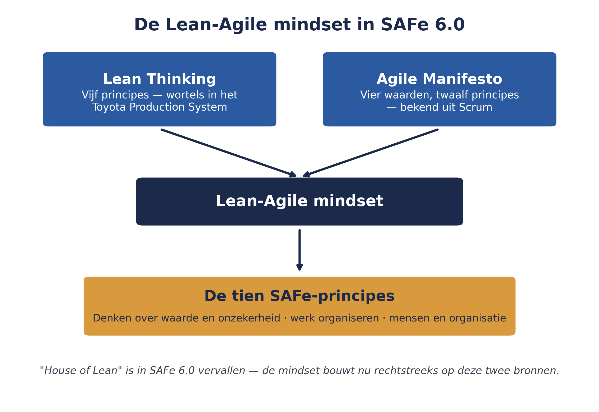

Wat de Lean-Agile mindset is
⏱ 16 minWie de Lean-Agile mindset niet begrijpt, gaat PI Planning of het Agile Release Train al snel gebruiken als een nieuw stelsel van vergaderingen — precies de watervalreflex waar Meridiaan na WGP 2.0 vanaf probeerde te komen. Scaled Agile plaatst deze mindset daarom nadrukkelijk vóór alle praktische SAFe-mechanismen die u vanaf deel 4 leert.
In eerdere versies van SAFe werd deze mindset uitgebeeld met het "House of Lean": een huis met een dak (waarde), pilaren (respect voor mensen, flow, innovatie, meedogenloze verbetering) en een fundament (leiderschap). In SAFe 6.0 is dat beeld losgelaten. De mindset wordt nu rechtstreeks opgebouwd uit twee bronnen die u waarschijnlijk allebei al kent, maar die SAFe expliciet samenbrengt:
- De vijf principes van Lean Thinking — afkomstig uit de Lean-traditie (met wortels in het Toyota Production System): waarde definiëren vanuit het perspectief van de klant, de waardestroom in kaart brengen en verspilling wegnemen, zorgen dat werk vloeit zonder onderbrekingen, laten trekken door vraag in plaats van duwen door planning, en voortdurend streven naar perfectie.
- Het Agile Manifesto — de vier waarden en twaalf principes die u kent uit Scrum: mensen en interacties boven processen en tools, werkende software boven uitgebreide documentatie, samenwerking met de klant boven contractonderhandeling, inspelen op verandering boven het volgen van een plan.
Waarom dit onderscheid ertoe doet: Lean gaat over de stroom van waarde door de hele organisatie — inclusief onderdelen die niets met softwareontwikkeling te maken hebben, zoals inkoop, compliance of HR. Agile gaat over hoe teams hun werk organiseren. SAFe heeft beide nodig: Agile alleen verklaart niet hoe Meridiaan zijn portfoliobudget herverdeelt tussen het werkgeversportaal en het mutatieplatform; Lean alleen verklaart niet hoe een team elke twee weken werkende software oplevert.

Uit Werkboek deel 2, Opdracht 2.1 en Zelftoets vraag 1